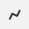

Создание замечаний¶
Если вы представитель службы заказчика, технадзора или другой уполномоченный создавать замечания в проекте, вам доступна функция фиксации замечаний. Замечания могут быть созданы двумя способами.
Краткая карточка замечания¶
Ряд замечаний на строительном объекте не требуют привязки к плану, чертежу. Например, замечание руководителя строительного контроля инженеру по приёмке некачественного материала.
Также это могут быть поручения: произвести фотофиксацию журнала работ и многое другое.
Для создания замечания без привязки к плану в разделе Замечания нажмите на синюю кнопку  в правом нижнем углу экрана (Рис. 1).
После этого откроется краткая форма карточки замечания.
в правом нижнем углу экрана (Рис. 1).
После этого откроется краткая форма карточки замечания.
{kind=link}
Развёрнутый вид карточки показан ниже (Рис. 2):
{kind=link}
Заполните всю информацию по замечанию, которая доступна на данный момент:
Выбрать шаблон. Данная функция позволяет заполнять поля Название и Описание типовыми формулировками.
Например, текстом из нормативно-технической документации или любым другим текстом, в зависимости от того, как эту функцию настроит функциональный администратор системы.
При заполнении данного пункта достаточно ввести ключевые слова, программа сама предложит вам варианты нормативных документов (Рис. 3). Выберите нужный для заполнения замечания стандарт.
Рис. 3. Поиск нормативного документа, по ключевым словам, в пункте "Выбрать шаблон" Чтобы изменить пункт стандарта, нажмите на кнопку “Выбрать шаблон” и повторите действия, описанные выше. Можно отредактировать предложенный программой текст вручную.
Название. Придумайте название для вашего замечания. Название и вся информация в данном разделе должна быть максимально точной, она будет автоматически включена в предписание и отчет.
Описание. Подробно опишите замечание.
Категории. Некий идентификатор, который присваивается замечанию и по которому можно задать фильтр для поиска. Список категорий настраивается в административной панели.
Исполнитель. Представитель компании, отвечающий за выполнение работ по устранению данного замечания.
Срок устранения. На усмотрение автора замечания. Может быть скорректирован по договоренности с исполнителем.
Файлы. Программа позволяет добавить/создать неограниченное количество фотографий и любых других файлов: docx, pdf и прочие. Если при создании фотографии включены настройки геолокации в программе и на устройстве, то геолокация автоматически прикрепляется к фотографии.
Координаты геолокации будут находиться под фотографией, по ним можно перейти на Карты Google и увидеть местоположение замечания. Если в этом нет необходимости, то геолокацию можно отключить.
Рекомендуем делать фотографии нарушений до устранения и после. А также скан-копии подписанных предписаний и актов об устранении.
{kind=link}
Примечание
Краткая форма позволяет быстро зафиксировать основные моменты нарушения. Далее вы можете остаться в списке замечаний нажав на кнопку “Создать” или перейти в детальное заполнение замечания нажав “Создать и открыть”.
Дальнейшее редактирование и наполнение замечания можно продолжить в офисе. Это сэкономит время работы на объекте.
Полная форма карточки замечания¶
При нажатии на ранее созданное замечание или кнопки «Создать и открыть» в краткой карточке откроется полная форма карточки замечания.
Она содержит следующие вкладки (Рис. 4):
Главная. Содержит основную информацию о замечании (название, описание, срок устранения, ФИО исполнителя и т.д.).
Файлы. Просмотр ранее загруженных фотовидео со строительной площадки и загрузка новых файлов
Документы. Просмотр и скачивание сформированных документов на данное замечание (предписание, акты)
История. История действий, произведённых в программе.
Комментарии. Переписка пользователей по замечаниям.
{kind=link}
Вкладка «Главная»¶
Важное
 . Кнопка присваивает замечанию статус важное и поднимает замечание в реестре замечаний наверх.
. Кнопка присваивает замечанию статус важное и поднимает замечание в реестре замечаний наверх.Сформировать документ . Сформировать документ (предписание, акт, отчёт) по данным из карточки замечания.
Состояние. Доступно три статуса замечания: открыт, выполнен, проверен. Статус меняют по ходу устранения замечания:
Статус «Открыто» присваивает автор замечания, например, сотрудник строительного контроля, данный статус присваивается автоматически при создании замечания.
Статус «Устранено» присваивает сотрудник, отвечающий за исправление замечания.
Статус «Закрыто» присваивает сотрудник, контролирующий устранение замечания.
Выбрать план. Прикрепление замечания к чертежу.
Выбрать шаблон. Данная функция позволяет заполнять поля Название и Описание типовыми формулировками.
Номер. Номер замечания выдаётся программой автоматически.
Элемент структуры. В данном поле отображается полный путь до структурного элемента, на котором находится замечание.
Название. Придумайте название для вашего замечания. Название и вся информация в данном разделе должна быть максимально точной, она будет автоматически включена в предписание и отчет.
Описание. Подробно опишите замечание.
Местоположение. В данной строке можно указывать названия осей или локацию, к которой относится замечание.
Предложение по устранению. В этом поле вы можете написать свои рекомендации по устранению нарушения.
Категории. Некий идентификатор, который присваивается замечанию и по которому можно задать фильтр для поиска. Список категорий настраивается в административной панели.
Автор. ФИО пользователя контролирующего устранения замечания. По умолчанию заполняется ФИО пользователя, создавшим замечание.
Исполнитель. Представитель компании, отвечающий за выполнение работ по устранению данного замечания.
Наблюдатели. В этом поле вы можете указать участников, которых необходимо дополнительно информировать о ходе устранения нарушения, например, начальника технического надзора. Таких участников может быть несколько.
Дата создания. Данное поле недоступно для редактирования. Оно заполняется автоматически в момент создания замечания.
Срок устранения. На усмотрение автора замечания. Может быть скорректирован по договоренности с исполнителем.
Фактическая дата устранения. Проставляется автоматически при смене статуса замечания на «Проверено».
Дата отчетности. В этом поле вы можете указать дату, которая будет указана в предписании. Можно редактировать.
{kind=link}
{kind=link}
{kind=link}
{kind=link}
Развёрнутый вариант заполненной карточки вы можете посмотреть ниже (Рис. 5):
{kind=link}
Вкладка «Файлы»¶
Здесь вы сможете загрузить удалить или отредактировать ранее загруженные файлы. Загрузка и удаление показано ниже (Рис. 6):
{kind=link}
Также на вложения можно добавлять аннотации.
Для этого откройте загруженную в приложение фотографию и нажмите на значок  .
После этого появится меню с инструментами для рисования (Рис. 4)
.
После этого появится меню с инструментами для рисования (Рис. 4)

Рассмотрим каждый инструмент отдельно:
 — перемещение по снимку,
— перемещение по снимку, — добавление прямых линий,
 — добавление прямоугольной области,
— добавление прямоугольной области, — добавление круглой области,
— добавление круглой области, — выбор цвета линий,
— выбор цвета линий, — выбор толщины линий,
— выбор толщины линий, — отменить последнее действие,
— отменить последнее действие, — вернуть последнее изменение,
— вернуть последнее изменение, — применить аннотации к фотографии,
— применить аннотации к фотографии,
{kind=link}
{kind=link}
{kind=link}
{kind=link}
После того, как вы нарисуете требуемые аннотации, фотография будет отправлена на дозагрузку нарисованных изображений.
Вкладка «Комментари軶
В самом замечании можно вести переписку между назначенными на данное замечание сотрудниками и всеми пользователями программы, обладающими правами на это.
Пользователь, в зависимости от настройки прав либо не сможет отредактировать данный раздел, либо:
может удалить из переписки свои сообщения,
может удалить и свои, и чужие сообщения.
Для удаления необходимо нажать правой кнопкой мыши на комментарий , который вы хотите удалить, а затем подтвердить удаление в новом окне (Рис. 8).
{kind=link}
Создание замечания на чертеже. Работа с чертежами.¶
Этот способ удобен для создания замечаний, которые можно показать на плане. Например, трещина в стене, коррозия арматуры и подобное. В случае создания замечания на чертеже оно прикрепляется к конкретному месту на чертеже.
Чтобы создать замечание на чертеже:
Откройте чертеж, нажмите на красную кнопку в правой рабочей области экрана
 (Рис. 9).
(Рис. 9).

Наведите курсор мыши на место на плане, где было выявлено нарушение, и нажмите на левую кнопку мыши для отметки. На сенсорном экране вашего смартфона/планшета нажмите на место на чертеже.
Появится знак замечания
 , и автоматически откроется краткая форма создания замечания.
Приступите к заполнению информации по замечанию, как уже было описано ранее.
, и автоматически откроется краткая форма создания замечания.
Приступите к заполнению информации по замечанию, как уже было описано ранее.
Если Вы хотите повторно попасть в описание замечания, нажмите левой кнопкой мыши на замечание на чертеже.
Далее нажмите на кнопку  (Рис. 10).
(Рис. 10).

Для повторного открытия замечания на смартфоне/планшете на сенсорном экране нажмите на замечание, далее на кнопку .